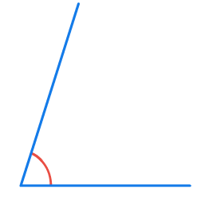
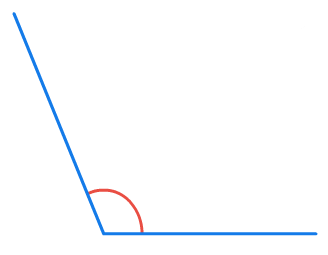
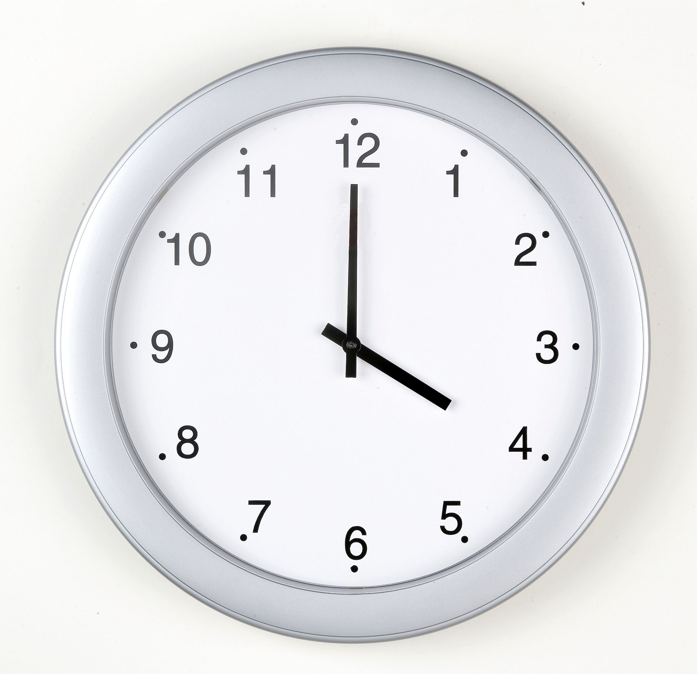

- 문제 1
- 문제 2
- 문제 3
- 문제 4
- 문제 5
- 문제 6
- 문제 7
- 문제 8
-
각도를 어림하고 각도기로 재어 확인해 보시오.
-
어림한 각도약°예 40
-
잰 각도°40
-
-
각도를 어림하고, 각도기로 확인해 보시오.
-
어림한 각도약°예140
-
잰 각도°140
-
-
70˚의 각을 어림하여 그리고 각도기로 확인해 보시오.
-
각도를 어림하고, 각도기로 재어 확인해 보시오.
-
어림한 각도약°예 60
-
잰 각도°60
-
-
도윤이와 나리가 각도를 어림했습니다. 누가 어림을 더 잘했다고 생각하는지 쓰고, 각도기로 재어 확인해 보시오.
40°쯤 되는 것 같아.도윤60°쯤 되는 것 같아.나리어림을 더 잘했다고 생각하는 사람 예나리잰 각도 °55 -
다음 각도를 어림하여 그려 보시오.
70°115° -
자신이 생각한 각도의 각을 자만 이용하여 그리고, 각도기로 재어 확인해 보시오.
예-
어림한 각도약°예 40
-
잰 각도°40
-
-
시곗바늘이 이루는 작은 쪽의 각을 어림하고, 각도기로 재어 확인해 보시오.
-
어림한 각도약°예 120
-
잰 각도°120
-